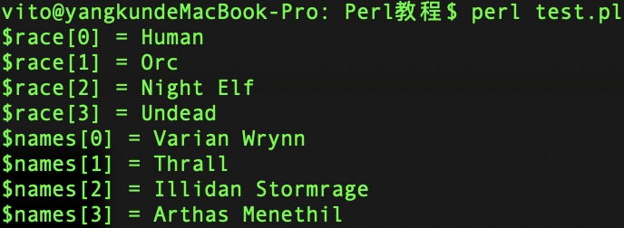
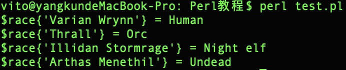
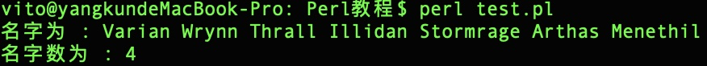

Perl 变量
变量是存储在内存中的数据，创建一个变量即会在内存上开辟一个空间。
解释器会根据变量的类型来决定其在内存中的存储空间，因此你可以为变量分配不同的数据类型，如整型、浮点型、字符串等。
上一章节中我们已经为大家介绍了Perl的三个基本的数据类型：标量、数组、哈希。
-
标量 $ 开始， 如$a $b 是两个标量。
数组 @ 开始 ， 如 @a @b 是两个数组。
哈希 % 开始 ， %a %b 是两个哈希。
Perl 为每个变量类型设置了独立的命令空间，所以不同类型的变量可以使用相同的名称，你不用担心会发生冲突。例如 $foo 和 @foo 是两个不同的变量。
创建变量
变量不需要显式声明类型，在变量赋值后，解释器会自动分配匹配的类型空间。
变量使用等号(=)来赋值。
我们可以在程序中使用 use strict 语句让所有变量需要强制声明类型。
等号左边为变量，右边为值，实例如下：
$age = 29; # 整型 $name = "Kun Yang"; # 字符串 $deposit = 0.01; # 浮点数
以上代码中 29, "Kun Yang" 和 0.01 分别赋值给 $age, $name 和 $deposit 变量。
接下来我们会看到数组和哈希的使用。
标量变量
标量是一个单一的数据单元。 数据可以是整数，浮点数，字符，字符串，段落等。简单的说它可以是任何东西。以下是标量的简单应用：
实例
以上程序执行输出结果为：

数组变量
数组是用于存储一个有序的标量值的变量。
数组 @ 开始。
要访问数组的变量，可以使用美元符号($)+变量名，并指定下标来访问，实例如下所示：
实例
以上程序执行输出结果为：

程序中我们在 $ 标记前使用了转义字符 (\) ，这样才能输出字符 $。
哈希变量
哈希是一个 key/value 对的集合。
哈希 % 开始。
如果要访问哈希值，可以使用 $ + {key} 格式来访问：
实例
以上程序执行输出结果为：

变量上下文
所谓上下文：指的是表达式所在的位置。
上下文是由等号左边的变量类型决定的，等号左边是标量，则是标量上下文，等号左边是列表，则是列表上下文。
Perl 解释器会根据上下文来决定变量的类型。实例如下：
实例
以上程序执行输出结果为：

代码中 @names 是一个数组，它应用在了两个不同的上下文中。第一个将其复制给另外一个数组，所以它输出了数组的所有元素。第二个我们将数组赋值给一个标量，它返回了数组的元素个数。
以下列出了多种不同的上下文：
| 序号 | 上下文及描述 |
|---|---|
| 1 | 标量 −
赋值给一个标量变量，在标量上下文的右侧计算 |
| 2 | 列表 −
赋值给一个数组或哈希，在列表上下文的右侧计算。 |
| 3 | 布尔 −
布尔上下文是一个简单的表达式计算，查看是否为 true 或 false。 |
| 4 | Void − 这种上下文不需要关系返回什么值，一般不需要返回值。 |
| 5 | 插值 −
这种上下文只发生在引号内。 |